Giáo trình nền tảng chuẩn mực của huấn luyện viên trưởng MIT Carol Matsuzaki
Lời Giới Thiệu: Nền Tảng Vững Chắc Tạo Nên Nhà Vô Địch
Introduction: Building the Rock-Solid Foundation for Championship Tennis
Triết Lý Huấn Luyện Của Carol Matsuzaki
Bất kỳ một công trình vĩ đại nào cũng phải được xây dựng trên một nền móng kiên cố. Trong quần vợt, những cú đánh hoa mỹ đỉnh cao mà bạn thấy trên truyền hình thực chất chỉ là phần ngọn của một cái cây có bộ rễ cắm sâu vào các nguyên lý cơ bản: Cách cầm vợt chuẩn xác, bộ chân di chuyển nhịp nhàng, sự thăng bằng của trọng tâm và cảm giác tiếp xúc bóng trước thân người. Là một huấn luyện viên trưởng tại Học viện Công nghệ Massachusetts (MIT) và cựu vận động viên vô địch quốc gia, tôi đã chứng kiến vô số tay vợt tài năng chững lại trong sự nghiệp chỉ vì họ đốt cháy giai đoạn. Cuốn sách này được thiết kế theo phương pháp "Học đi đôi với hành" (Learn-by-doing), cung cấp cho bạn những chỉ dẫn ngắn gọn, súc tích, hình ảnh minh họa trực quan và hệ thống bài tập tự kiểm tra giúp bạn tự hoàn thiện kỹ năng một cách nhanh chóng nhất.
Trang Thiết Bị, Giày Quần Vợt Và Khởi Động Chuẩn Mực
Sai lầm phổ biến nhất của người mới chơi là sử dụng giày chạy bộ thông thường để thi đấu tennis. Giày chạy bộ được thiết kế cho các chuyển động thẳng về phía trước và hoàn toàn thiếu sự hỗ trợ đệm đỡ hai bên hông bàn chân. Khi bạn thực hiện những pha đổi hướng đột ngột trên sân cứng, giày chạy bộ sẽ khiến bạn rất dễ bị lật sơ mi cổ chân. Hãy đầu tư một đôi giày chuyên dụng cho quần vợt có đế chống mài mòn và độ bám ngang vững chắc. Bên cạnh đó, thói quen khởi động kéo giãn cơ động học trước trận đấu và bài tập chạy rèn luyện bộ chân là bắt buộc để kích hoạt các khớp xương, giúp bạn ngăn ngừa chấn thương và sẵn sàng cho những pha bóng tốc độ cao.
Chương 1: Các Kiểu Cầm Vợt Chuẩn Mực Trong Quần Vợt
Chapter 1: Tennis Grips — The Interface Between Player and Racket
Bát Cạnh Cán Vợt Và Vị Trí Của Khớp Gốc Ngón Trỏ
Cán vợt quần vợt không phải hình tròn mà là một hình bát giác có tám cạnh vát (Bevels). Để xác định chính xác kiểu cầm vợt, bạn căn cứ vào vị trí của khớp gốc ngón trỏ (Index Finger Knuckle) và gót bàn tay đặt lên các cạnh vát này: Kiểu Cầm Eastern Forehand: Đặt khớp ngón trỏ vào cạnh số 3. Đây là kiểu cầm cổ điển, cho phép tiếp xúc bóng phẳng, kiểm soát lực tốt và thích hợp cho các cú đánh bóng ngang tầm thắt lưng. Kiểu Cầm Semi-Western: Khớp ngón trỏ nằm ở cạnh số 4. Đây là kiểu cầm thống trị quần vợt hiện đại, tạo ra sự cân bằng hoàn hảo giữa lực đánh bộc phát và độ xoáy topspin an toàn qua lưới. Kiểu Cầm Western: Khớp ngón trỏ nằm ở cạnh số 5 dưới đáy cán vợt. Kiểu cầm này tạo ra độ xoáy cuộn cực mạnh và lý tưởng khi xử lý những quả bóng nảy cao ngang vai. Kiểu Cầm Continental (Cầm Búa): Khớp ngón trỏ nằm ở cạnh số 2. Đây là kiểu cầm đa năng bắt buộc phải có cho các cú giao bóng, cú vô-lê trên lưới, cú đập overhead smash và các pha cắt bóng phòng thủ (slice).
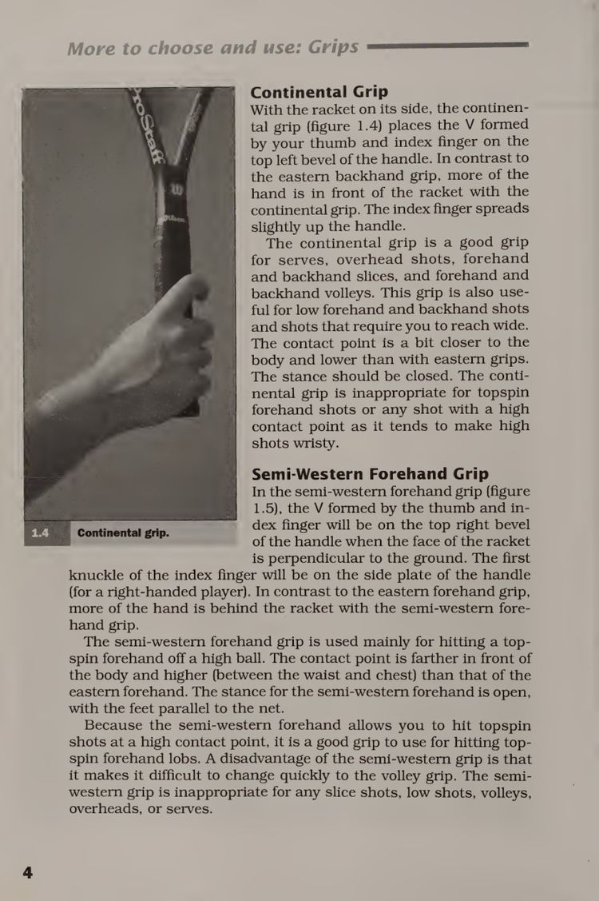
Sơ đồ 1: Các Kiểu Cầm Vợt — Vị trí bàn tay và các cạnh vát bát giác của cán vợt từ Continental, Eastern đến Semi-Western.
Chương 2: Bộ Chân & Kỹ Thuật Di Chuyển Trên Sân
Chapter 2: Footwork and Court Movement
Tư Thế Sẵn Sàng (Ready Position) Và Bước Tách Chân (Split-Step)
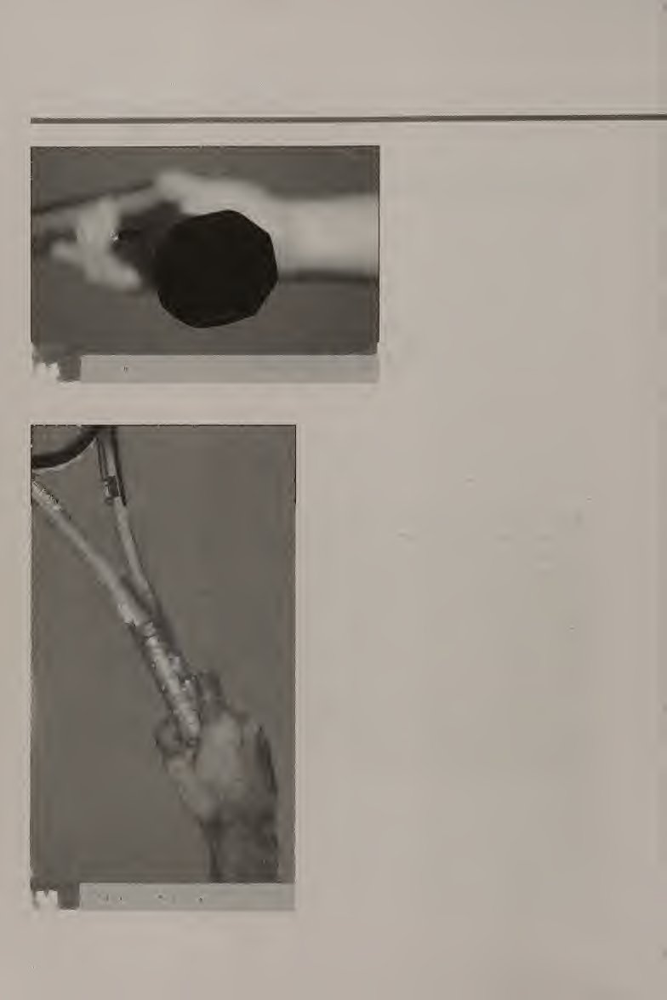
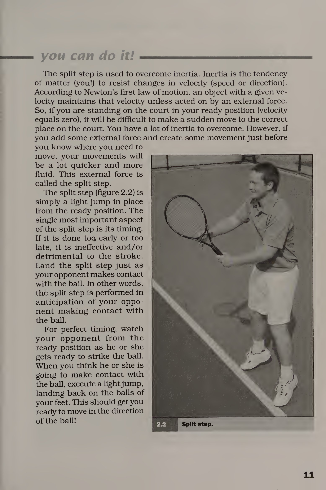
[English: Split Step Biomechanics: Overcoming Inertia & Explosive Multi-Directional Takeoff]
Quần vợt là môn thể thao bắt đầu từ đôi chân chứ không phải cánh tay. Nếu bạn không đưa cơ thể vào vị trí thuận lợi, cú vung vợt đẹp nhất cũng trở nên vô nghĩa. Tư thế sẵn sàng đòi hỏi hai chân mở rộng hơn vai một chút, đầu gối hơi chùng xuống, trọng tâm dồn lên ức bàn chân và vợt được giữ trước ngực bằng cả hai tay. Khoảnh khắc đối phương tiếp xúc bóng, bạn phải thực hiện Bước nhún tách chân chuẩn bị chân (Split-Step). Bước nhảy nhỏ này giúp bạn nạp năng lượng đàn hồi vào cơ bắp, cân bằng trọng tâm và sẵn sàng bùng nổ theo bất kỳ hướng nào trái bóng bay tới.
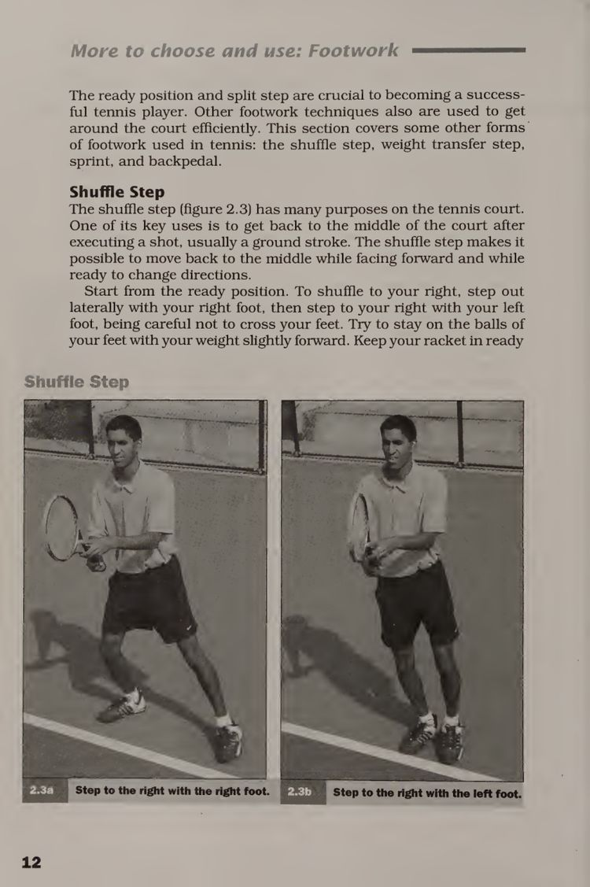
Sơ đồ 2: Kỹ Thuật Bộ Chân — Tư thế sẵn sàng, bước nhảy split-step và các bước trượt shuffle step di chuyển trên sân.
Bài Tập Chạy Xe Lửa (The Train Drill) Rèn Luyện Thể Lực & Phản Xạ
Để thuần thục các kiểu di chuyển trên sân, bài tập "Chạy Xe Lửa" (The Train) là một giáo trình kinh điển: Xuất phát từ góc vạch đáy sân, bạn chạy tiến về phía lưới, trượt ngang sang vạch biên đánh đơn, lùi bước nhỏ (backpedal) về vạch giao bóng, rồi trượt shuffle step vào điểm chữ T trung tâm. Tiếp tục chạy tiến lên lưới rồi lùi về phía đối diện. Bài tập này buộc đôi chân phải liên tục thay đổi giữa bước chạy tiến, chạy lùi và trượt ngang, giúp bạn xây dựng bản năng di chuyển mượt mà và duy trì thăng bằng trong mọi pha bóng khốc liệt.
Chương 3: Cú Thuận Tay Cơ Bản & Nâng Cao
Chapter 3: The Forehand Groundstroke
Chuỗi động học liên hoàn Học Của Cú Thuận Tay Chuẩn Mực
Cú thuận tay (Forehand) là vũ khí ghi điểm chủ lực của hầu hết các tay vợt. Một cú thuận tay hoàn hảo bao gồm bốn giai đoạn động học nối tiếp nhau: Giai đoạn Chuẩn bị: Xoay vai nghiêng về phía bên thuận tay ngay khi bóng rời vợt đối phương, đưa vợt về phía sau tạo thành một đường cung mượt mà. Giai đoạn Hạ vợt: Hạ đầu vợt xuống thấp hơn tầm bay của quả bóng để chuẩn bị tạo lực nâng từ dưới lên. Giai đoạn Tiếp xúc bóng: Điểm tiếp xúc bắt buộc phải nằm ở phía trước thân người và ngang tầm thắt lưng. Trọng tâm cơ thể chuyển nhịp nhàng từ chân sau sang chân trước. Giai đoạn Vung theo đà (Follow-through): Mặt vợt vuốt qua quả bóng tạo xoáy topspin, cánh tay tiếp tục vung mượt mà qua vai đối diện và kết thúc cú đánh trong tư thế thăng bằng vững chãi.
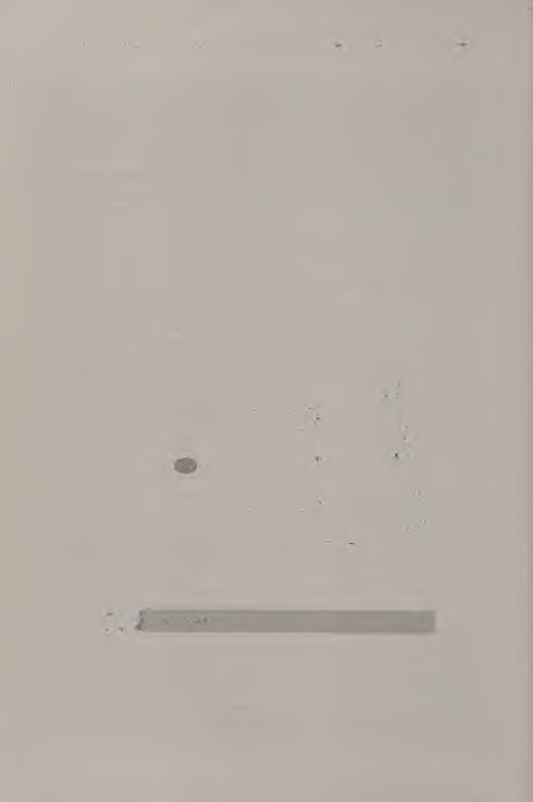
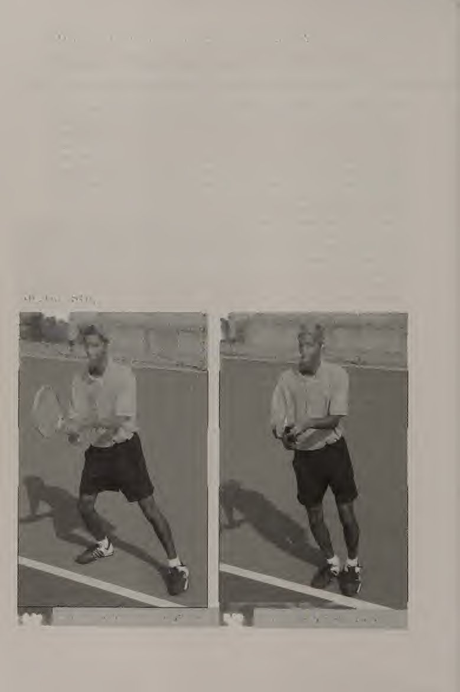
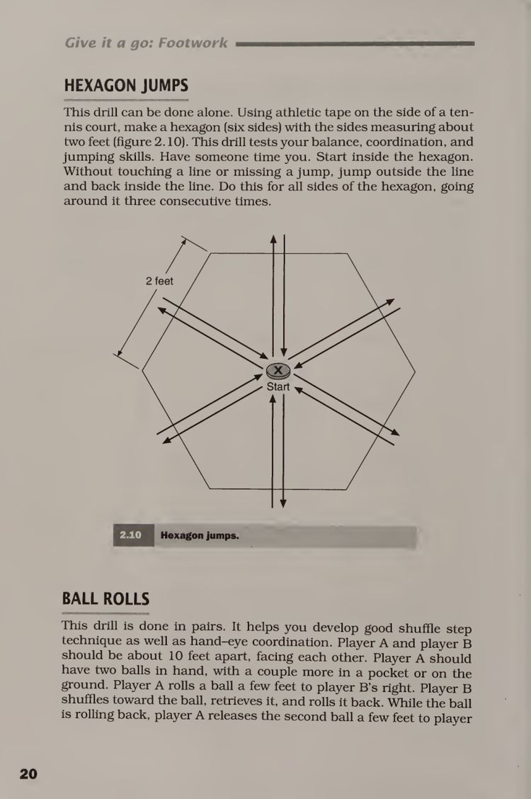
Sơ đồ 3: Cú Thuận Tay — Trình tự động tác từ mở vợt, chuyển trọng tâm, tiếp xúc bóng phía trước thân người đến vung vợt qua vai.
Chương 4: Cú Trái Tay Uy Lực (The Backhand)
Chapter 4: The Backhand Groundstroke — One-Handed vs. Two-Handed
So Sánh Cú Trái Một Tay Và Cú Trái Hai Tay
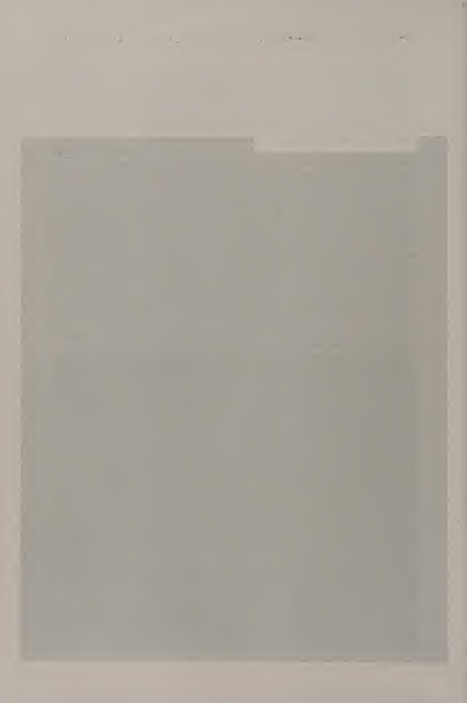
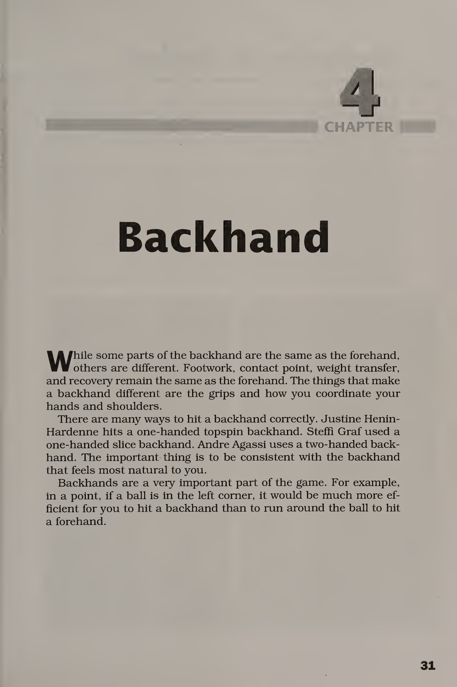
[English: Backhand Drive Fundamentals: Preparation, Forward Swing & High Extension]
Lựa chọn cú trái một tay hay hai tay là một trong những quyết định kỹ thuật quan trọng nhất của người chơi quần vợt: Cú Trái Một Tay (One-Handed Backhand): Đòi hỏi kiểu cầm vợt Eastern Backhand (khớp ngón trỏ ở cạnh số 1). Cú đánh này mang lại tầm với rộng hơn, sự linh hoạt tuyệt vời khi chuyển sang cú cắt bóng slice hoặc lao lên lưới bắt volley. Tuy nhiên, cú trái một tay đòi hỏi sức mạnh cổ tay và cẳng tay rất lớn, đồng thời điểm tiếp xúc bóng phải xa hơn về phía trước thân người. Cú Trái Hai Tay (Two-Handed Backhand): Tay thuận cầm kiểu Continental phía dưới, trong khi tay không thuận cầm kiểu Eastern Forehand phía trên. Tay không thuận đóng vai trò như tay thuận thứ hai, cung cấp thêm sức mạnh và độ ổn định phi thường. Cú đánh này cực kỳ hiệu quả khi đối phó với những quả bóng nảy cao ngang vai và những cú giao bóng sấm sét.
Chuyển Trọng Tâm Và Kết Thúc Cú Đánh Trái Tay
Trong cả hai kiểu đánh trái tay, việc xoay vai đưa lưng hơi hướng về phía lưới là điều kiện tiên quyết để nạp lực. Khi tiếp xúc bóng, hãy bước chân trước về phía quả bóng và truyền toàn bộ trọng lượng cơ thể từ chân sau sang chân trước. Cánh tay vung theo đà cao qua vai đối diện, giữ đầu cố định tại điểm tiếp xúc cho đến khi quả bóng đã rời khỏi mặt vợt.
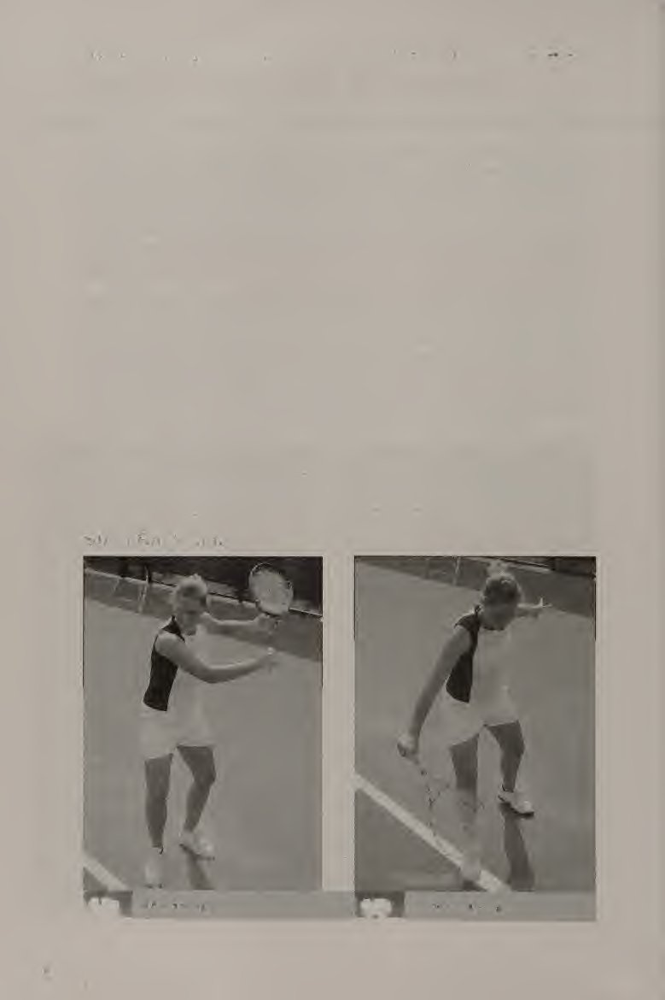
Chương 5: Kỹ Thuật Volley Kiểm Soát Khu Vực Lưới
Chapter 5: The Volley — Crisp, Punching Precision at the Net
Khóa Cổ Tay Và Nguyên Tắc Không Vung Vợt Lấy Đà
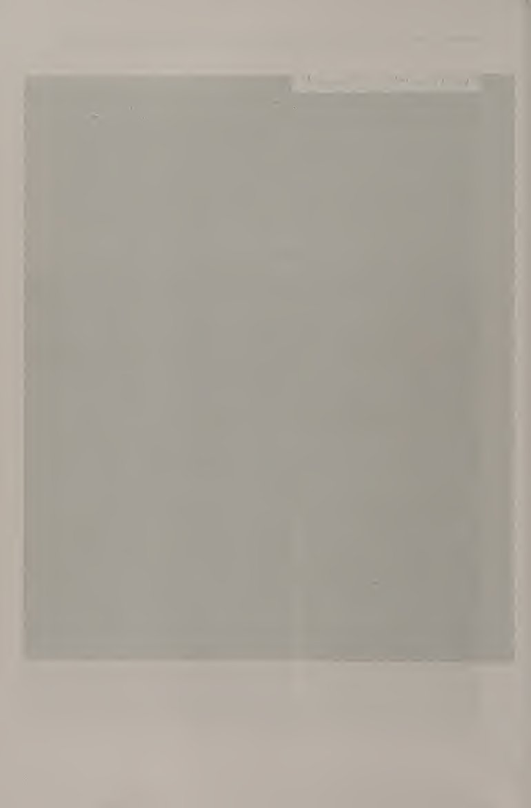
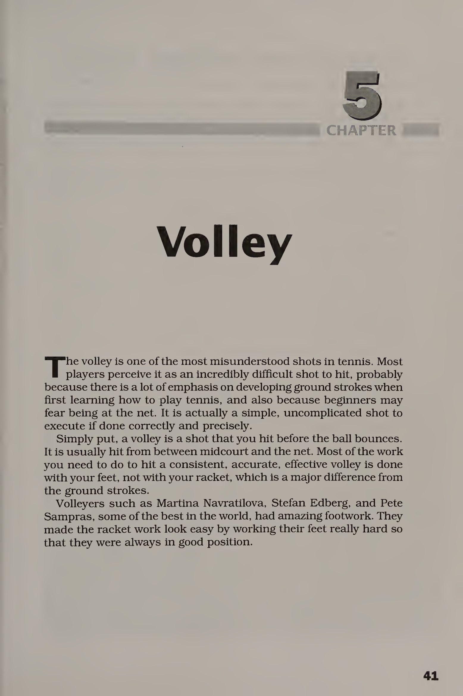
[English: Punch Volley Mechanics: Short Prep, Firm V-Wrist & Out-in-Front Contact]
Vô-lê (Volley) là cú đánh đón bóng trực tiếp trên không khi bóng chưa kịp nảy xuống mặt sân. Trên lưới, thời gian phản xạ chỉ tính bằng một phần mười giây, vì vậy bất kỳ động tác vung vợt lấy đà nào ra phía sau cũng sẽ dẫn đến việc tiếp xúc bóng muộn. Quy tắc bất biến của cú volley là: Luôn sử dụng kiểu cầm Continental cho cả bên thuận tay và trái tay. Mặt vợt luôn được giữ ở phía trước mặt, cổ tay khóa cứng tạo thành một góc chữ L vững chãi giữa cẳng tay và thân vợt. Cú đánh được thực hiện bằng động tác "đấm" hoặc đẩy nhẹ về phía trước kết hợp với bước đạp chân đối diện hướng vào quả bóng.
Xử Lý Volley Thấp Và Volley Ngang Tầm Ngực
Khi bóng bay thấp hơn mép lưới, bạn không được hạ đầu vợt xuống bằng cách Động tác sấp cổ tay / xoay trong cẳng tay. Thay vào đó, hãy chùng sâu hai đầu gối để hạ thấp toàn bộ trọng tâm cơ thể xuống ngang tầm quả bóng, giữ mặt vợt hơi mở để nâng bóng an toàn qua lưới. Với những quả bóng bay cao ngang ngực hoặc ngang vai, hãy tận dụng cơ hội đè mặt vợt dứt khoát đưa bóng cắm sâu xuống chân đối thủ để kết thúc điểm số.
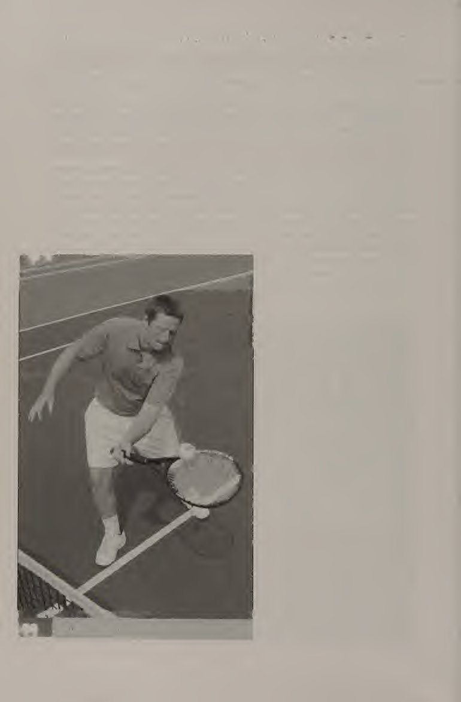
Chương 6: Cú Lốp Bóng Chiến Thuật (The Lob)
Chapter 6: The Lob — Tactical Height and Court Depth
Lốp Phòng Thủ (Defensive Lob) vs Lốp Tấn Công (Offensive Topspin Lob)
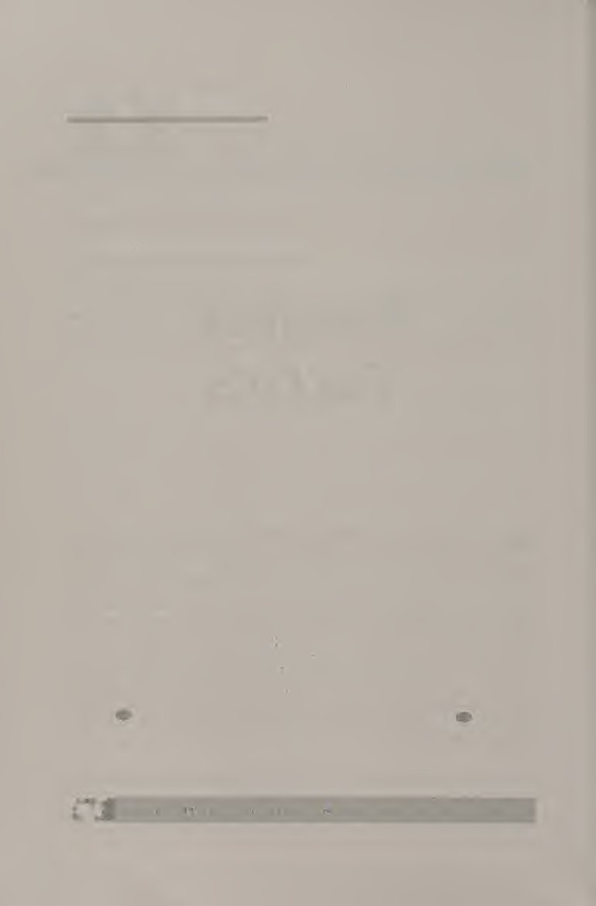
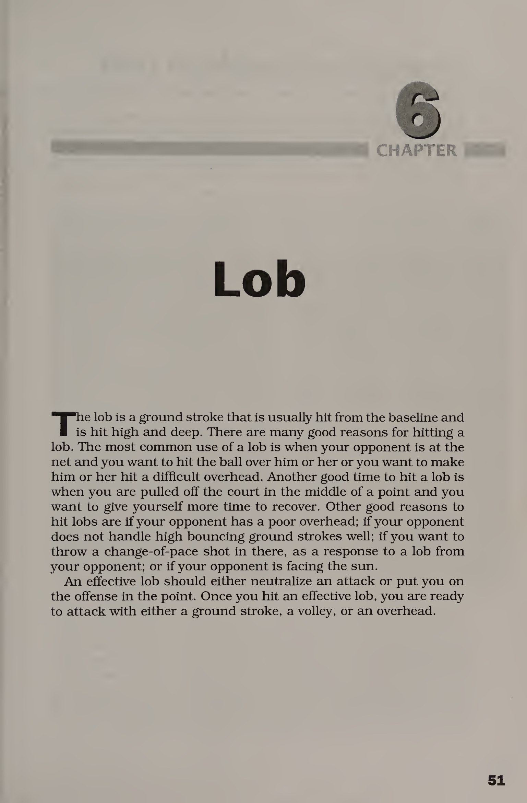
[English: Defensive & Offensive Lob Execution: High Arc & Depth Control]
Cú lốp bóng không chỉ là một giải pháp giải nguy đơn thuần mà còn là một vũ khí chiến thuật sắc bén: Cú Lốp Phòng Thủ: Thường được sử dụng khi bạn bị đối phương dồn ép ra xa khỏi sân đấu. Bằng cách mở mặt vợt hướng lên trời và đẩy bóng bay thật cao lên không trung, bạn mua được thời gian quý báu từ ba đến bốn giây để nhanh chóng chạy về tái lập vị trí thăng bằng giữa sân. Cú Lốp Tấn Công: Được thực hiện với động tác mở vợt ngụy trang giống hệt một cú đánh thuận tay hoặc trái tay thông thường. Nhưng ngay thời Điểm tiếp xúc bóng, bạn tăng tốc đầu vợt vuốt mạnh từ dưới lên trên để tạo độ xoáy cuộn topspin cực lớn. Bóng bay vọt qua đầu đối thủ đang áp sát lưới rồi đột ngột cắm sập xuống phần sân phía sau, khiến họ hoàn toàn không kịp quay đầu cứu bóng.
Chương 7: Cú Đập Bóng Trên Cao (Overhead Smash)
Chapter 7: The Overhead Smash — The Ultimate Finishing Stroke
Xoay Nghiêng Người Và Chỉ Tay Đón Bóng
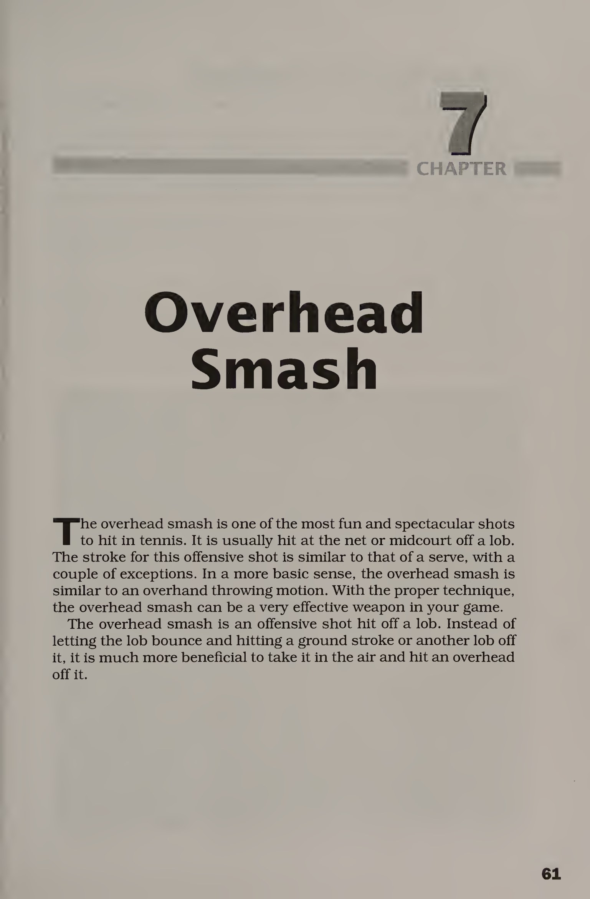
[English: The Overhead Smash: Tracking, Trophy Stance & Downward Pronation]
Cú đập bóng trên cao (Overhead Smash) là câu trả lời trừng phạt đối với những quả lốp bóng thiếu độ sâu của đối phương. Sai lầm lớn nhất của người chơi phong trào là đứng đối diện thẳng với lưới và chạy lùi thẳng lưng khi đón bóng bổng. Trình tự chuẩn bị chuẩn xác: Ngay khi nhận biết quả bóng bổng, hãy lập tức xoay nghiêng người vuông góc với lưới, nâng tay không thuận chỉ thẳng lên quả bóng trên không trung để làm mốc căn chỉnh cự ly và thăng bằng. Đồng thời, đưa vợt ra sau đầu theo tư thế chuẩn bị giao bóng, di chuyển bằng các bước trượt ngang (side-shuffle) lùi về sau vị trí rơi của bóng.
Điểm Tiếp Xúc Và Phát Lực Dứt Điểm
Điểm tiếp xúc bóng lý tưởng phải nằm ở phía trên đầu và hơi chếch về phía trước trán một chút. Hãy bật nhẹ hai chân lên khỏi mặt đất, vươn thẳng cánh tay lên điểm cao nhất để tiếp xúc bóng và quất mạnh cổ tay đưa bóng cắm thẳng xuống phần sân trống của đối thủ. Cánh tay vung theo đà chéo qua hông đối diện và hạ người xuống trong tư thế thăng bằng vững chắc.
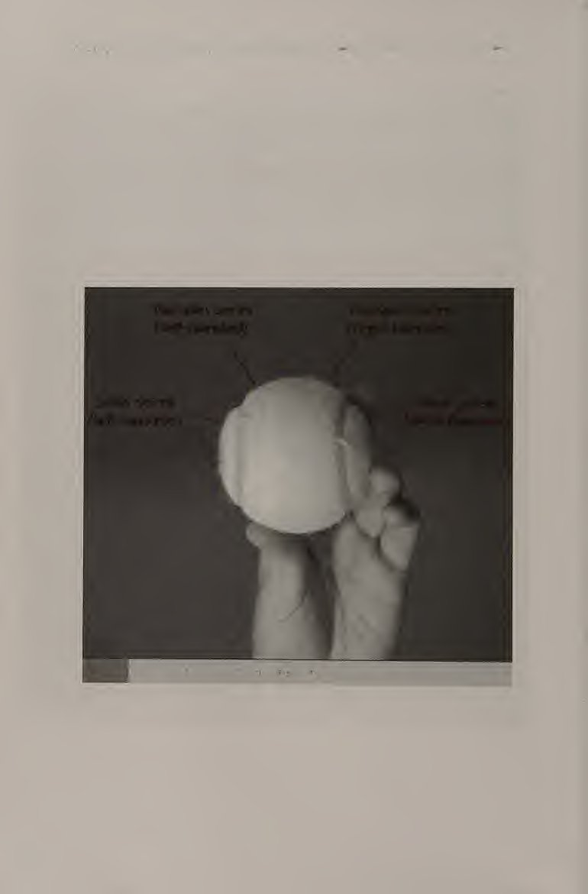
Chương 8: Nghệ Thuật Cú Bỏ Nhỏ (The Drop Shot)
Chapter 8: The Drop Shot — Touch, Disguise, and Backspin
Nghệ Thuật Ngụy Trang Và Cảm Giác Chạm Bóng Tinh Tế
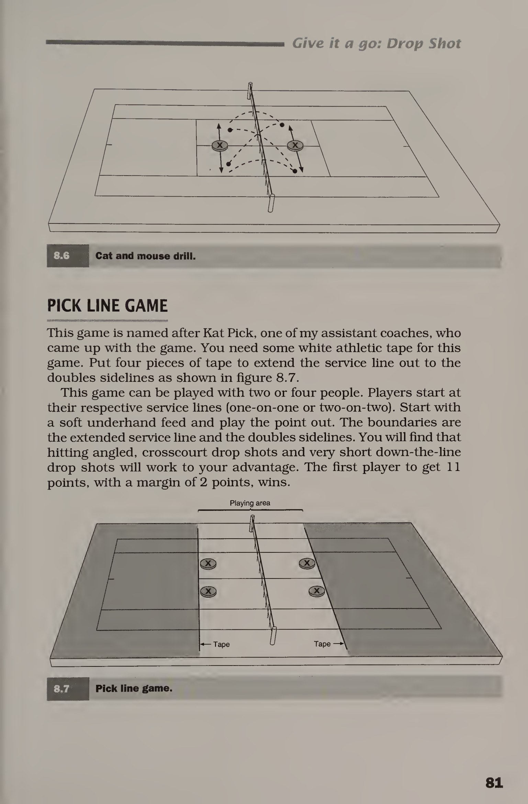
[English: Drop Shot Touch & Disguise: Soft Hands & Near-Net Spin Dampening]
Cú bỏ nhỏ (Drop Shot) là một tác phẩm nghệ thuật đòi hỏi sự tinh tế và khả năng đánh lừa đối thủ. Nếu bạn để đối phương đoán được ý đồ bỏ nhỏ ngay từ khi chuẩn bị vung vợt, họ sẽ dễ dàng chạy lên dứt điểm bóng. Bí quyết của cú bỏ nhỏ nằm ở sự "Ngụy trang" (Disguise): Bạn phải thực hiện động tác mở vợt ban đầu giống hệt như một cú đánh thuận tay hoặc trái tay đầy uy lực từ vạch cuối sân. Chỉ đến tích tắc cuối cùng trước khi tiếp xúc bóng, bạn mới thả lỏng cổ tay, nhẹ nhàng hạ tốc độ đầu vợt và đệm mặt vợt từ trên xuống dưới đáy quả bóng để triệt tiêu lực đánh.
Tạo Độ Xoáy Ngược Backspin Khiến Bóng Dừng Ngay Sau Lưới
Động tác cắt nhẹ đáy bóng sẽ truyền cho quả bóng một độ xoáy ngược (Backspin) cực lớn. Khi bóng bay qua lưới, nó sẽ rơi thẳng xuống và nảy rất thấp, thậm chí nảy giật lùi về phía lưới thay vì nảy tiến về phía trước. Thời điểm vàng để tung ra cú bỏ nhỏ là khi đối phương đang ở rất sâu phía sau vạch đáy sân hoặc đang bị mất đà sau một pha rượt đuổi bóng mệt nhoài.
Chương 9: Cú Giao Bóng Nền Tảng (The Serve)
Chapter 9: The Serve — Starting the Point with Power and Precision
Tư Thế Cúp Chiến Lợi Phẩm (Trophy Pose) Và Kỹ Thuật Tung Bóng
Cú giao bóng là cú đánh duy nhất trong quần vợt mà bạn có toàn quyền kiểm soát hoàn toàn mà không bị ảnh hưởng bởi đường bóng của đối phương. Kiểu cầm vợt bắt buộc là Continental. Hai yếu tố quyết định sự ổn định của cú giao bóng: Kỹ thuật tung bóng (The Toss): Cánh tay không thuận giữ bóng bằng các đầu ngón tay, nâng thẳng cánh tay từ vai một cách từ tốn và thả bóng ở tầm ngang mắt. Quả bóng phải được tung lên cao hơn tầm với của vợt một chút và rơi hơi chếch về phía trước vạch đáy sân. Tư thế Cúp Chiến Lợi Phẩm (Trophy Pose): Khi bóng ở trên đỉnh quỹ đạo, người giao bóng bước vào tư thế cúp kinh điển: Đầu gối chùng sâu để nạp lực từ mặt đất, vai nghiêng với vai sau thấp hơn vai trước, khuỷu tay cầm vợt gập một góc 90 độ ngang vai và đầu vợt hướng lên trời.
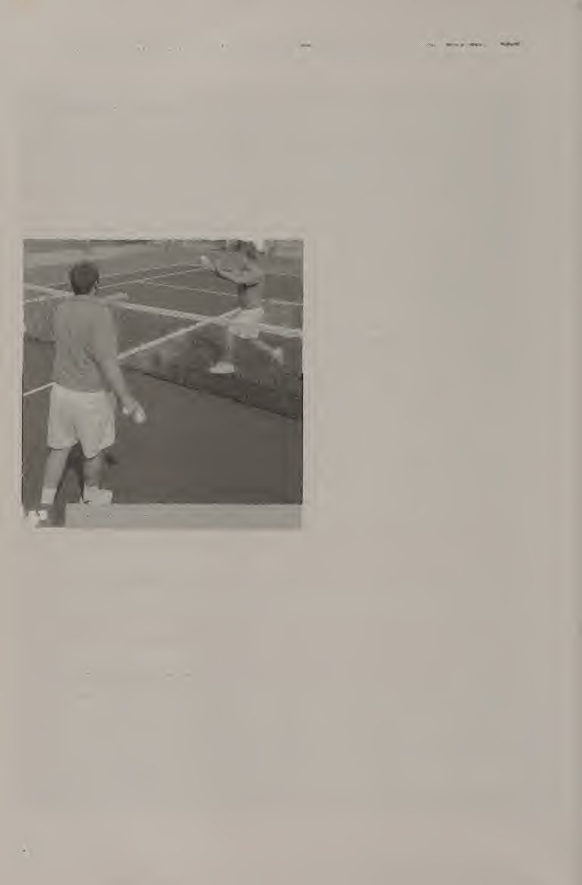
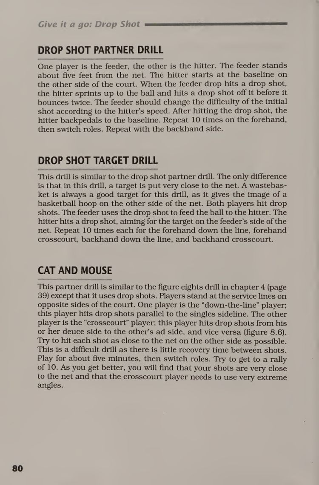
Sơ đồ 9: Kỹ Thuật Giao Bóng — Từ tư thế chuẩn bị, kỹ thuật tung bóng ổn định, nạp lực ở tư thế Trophy Pose đến bật nhảy tiếp xúc bóng trên cao.
Ba Kiểu Giao Bóng Chiến Thuật: Flat, Slice Và Kick
Một tay vợt toàn diện cần nắm vững ba biến thể giao bóng: Giao bóng phẳng (Flat Serve): Mặt vợt tiếp xúc trực diện vào chính giữa phía sau quả bóng với vận tốc tối đa, đưa bóng đi căng như kẻ chỉ, thường được dùng cho quả giao bóng một. Giao bóng xoáy ngang (Slice Serve): Vợt chém vào mặt bên phải của quả bóng (đối với người thuận tay phải), khiến bóng cuộn xoáy và nảy tạt ngang ra ngoài sân, kéo đối thủ ra xa khỏi vị trí phòng thủ. Giao bóng xoáy nảy (Kick Serve): Vợt quét từ góc 7 giờ lên góc 1 giờ của quả bóng, tạo độ xoáy cuộn topspin cực mạnh. Bóng bay an toàn cao qua lưới rồi đột ngột cắm xuống sân và nảy bốc cao ngang tầm vai đối phương, là vũ khí hoàn hảo cho quả giao bóng hai.
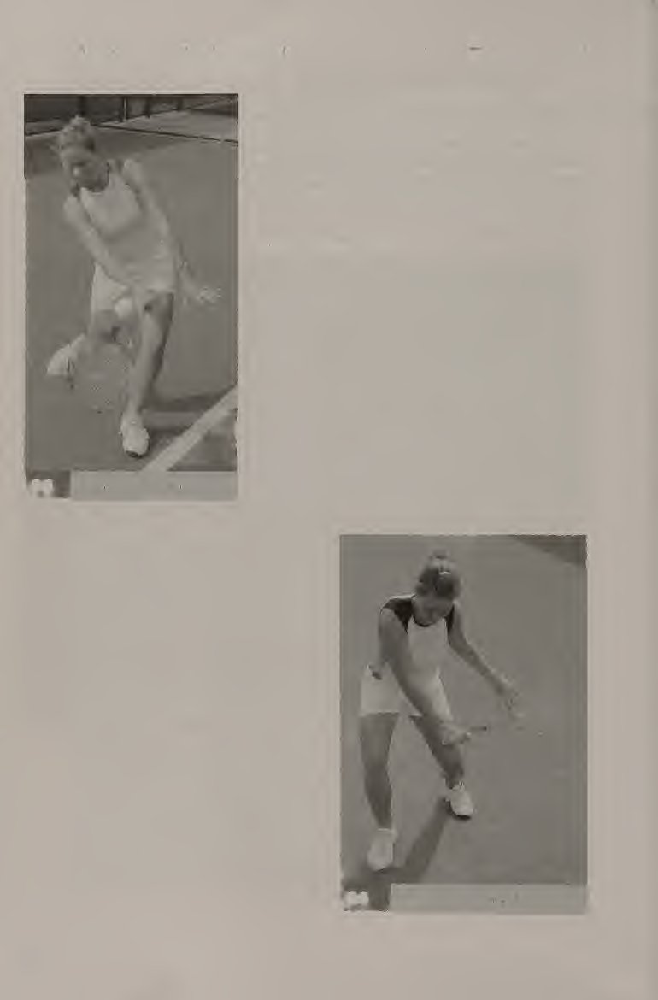
Chương 10: Trả Giao Bóng Thực Chiến (Return of Serve)
Chapter 10: Returning Serve — Neutralizing the Server's Advantage
Thu Ngắn Đà Vung Vợt Và Phản Xạ Nhanh
Trả giao bóng là cú đánh khó thứ hai sau cú giao bóng vì bạn phải xử lý một quả bóng bay tới với tốc độ cao trong thời gian cực ngắn. Sai lầm chí tử của người mới chơi là cố gắng mở vợt thật rộng ra phía sau như một cú đánh cuối sân bình thường. Để trả giao bóng hiệu quả, bạn phải thu ngắn đà vung vợt (Compact Backswing). Hãy chỉ xoay vai nghiêng nhẹ, đưa mặt vợt ra đón bóng và mượn chính tốc độ của quả giao bóng đối phương để phản xạ bóng ngược trở lại. Bước chân đón bóng tiến về phía trước để ép góc nảy của bóng.
Chiến Thuật Đối Đầu Giao Bóng Mạnh vs Giao Bóng Mềm
Khi gặp đối thủ giao bóng sấm sét: Hãy lùi sâu ra sau vạch đáy sân từ 1 đến 2 mét để có thêm thời gian quan sát. Sử dụng kiểu tiếp xúc bóng chặn đẩy (block return) sâu vào giữa sân đối phương, ưu tiên tuyệt đối đưa bóng vào cuộc an toàn. Khi gặp đối thủ giao bóng mềm và nông: Hãy chủ động tiến vào trong sân trước vạch đáy sân. Đón bóng ở điểm cao nhất và tung ra cú đánh tấn công áp đảo đưa bóng sâu về góc trái tay của đối phương để chiếm thế thượng phong ngay lập tức.
Chương 11: Chiến Thuật Đánh Đơn Toàn Diện
Chapter 11: Singles Tactics — Controlling Geometry and the Four Zones
Bốn Khu Vực Trên Sân Quần Vợt
Chiến thuật đánh đơn thành công dựa trên sự hiểu biết sâu sắc về vị trí cơ thể của bạn trên sân tương ứng với bốn khu vực chiến lược: Khu Vực Phòng Thủ (Defensive Zone - Phía sau vạch đáy sân): Khi bị đẩy lùi về đây, mục tiêu duy nhất của bạn là đánh những quả bóng sâu, bổng an toàn qua lưới để tái lập vị trí thăng bằng. Tuyệt đối không mạo hiểm dứt điểm từ khu vực này. Khu Vực Giằng Co Trung Lập (Neutral Zone - Xung quanh vạch đáy sân): Nơi diễn ra các pha đọ bóng bền chéo sân kiên nhẫn, chờ đợi thời cơ đối thủ đánh bóng non. Khu Vực Tấn Công Chuyển Tiếp (Transition Zone - Giữa vạch đáy sân và vạch giao bóng): Khi bóng đối phương rơi ngắn vào khu vực này, bạn phải lập tức dâng lên, tung cú đánh dứt điểm vào góc trống rồi tiếp tục tràn lên lưới. Khu Vực Dứt Điểm (Putaway Zone - Khu vực sát lưới): Nơi bạn tung ra các cú volley hoặc smash quyết định để kết liễu hoàn toàn điểm số.
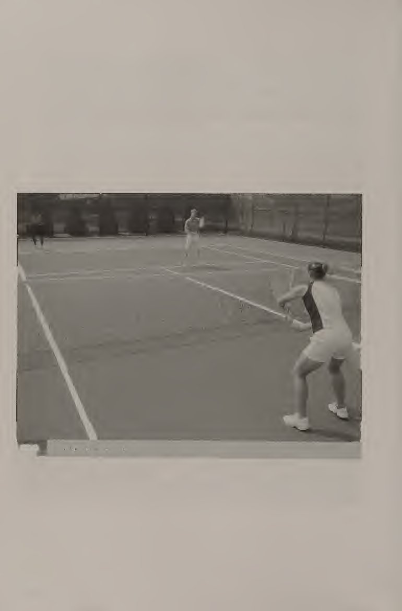
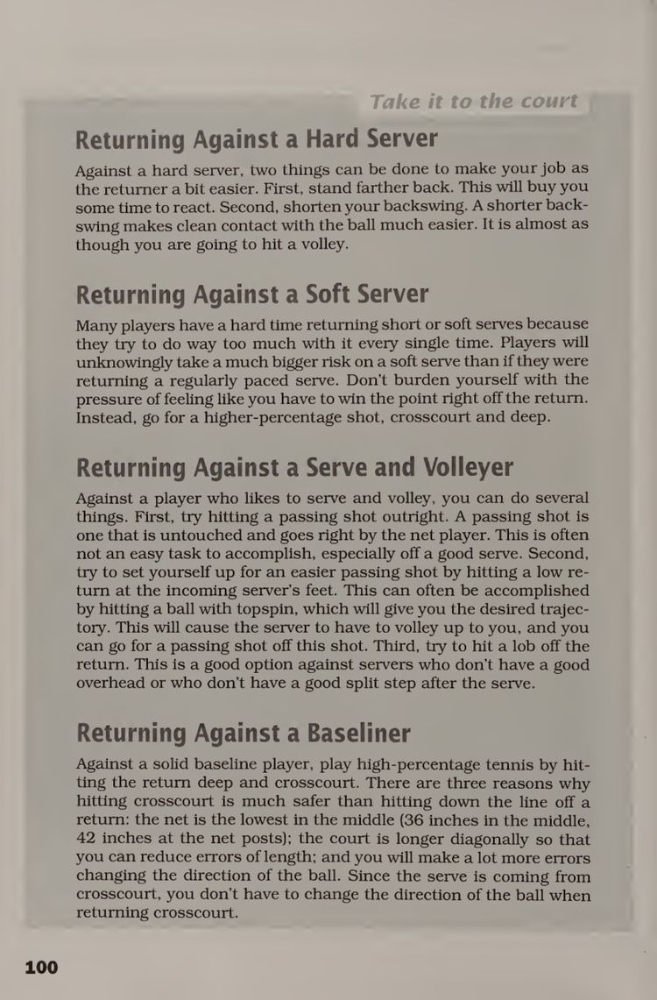
Sơ đồ 11: Bốn Khu Vực Sân Bãi — Nhận biết và đưa ra quyết định chuẩn xác theo từng khu vực: Phòng thủ, Giằng co trung lập, Tấn công và Dứt điểm.
Chương 12: Chiến Thuật Đánh Đôi Hiện Đại
Chapter 12: Doubles Tactics — Teamwork, Court Positioning, and Net Control
Kiểm Soát Khu Vực Lưới Và Phối Hợp Đồng Đội
Trong đánh đôi, đội nào chiếm lĩnh và kiểm soát được khu vực lưới sẽ giành chiến thắng trong phần lớn các pha bóng. Người đứng lưới phải luôn duy trì tư thế nhón gót chủ động, quan sát mắt và hướng vợt của đối thủ để thực hiện các pha bắt bài cắt bóng (poach). Người giao bóng và bạn cặp phải di chuyển đồng bộ như hai bánh răng kết nối: Khi một người tiến lên hoặc dạt biên, người kia tự động điều chỉnh cự ly để bịt kín lỗ hổng ở trung lộ giữa sân.
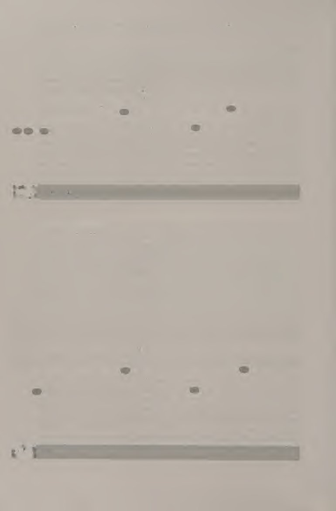
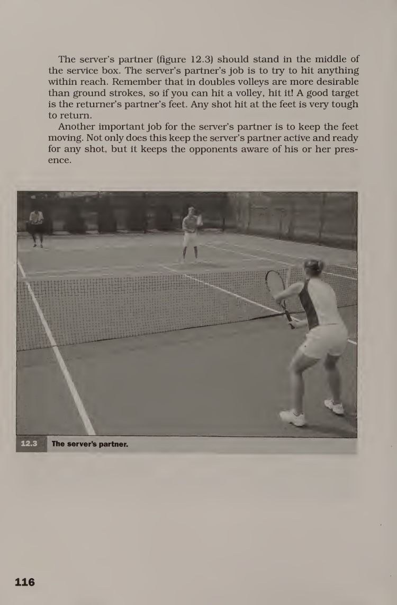
Sơ đồ 12: Chiến Thuật Đánh Đôi — Bố trí đội hình chuẩn mực, phân chia khu vực kiểm soát giữa người đứng lưới và người đứng cuối sân.